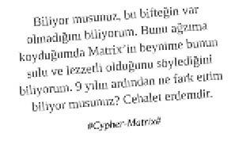

Neden İş Yemeği?
“Berrak Hanım ile ilişki geliştirmemiz gerekiyor, bizi bir yemek ortamında bir araya getirebilir misin?”
“Hedeflerimize ulaşabilmek için çalışanlarımızı motive etmemiz gerekiyor. Güzel bir yemek organize edebilir miyiz? Ancak bütçemiz çok zorlanmasın. Maksat, yemeğe götürdük mü? Götürdük.”
“Tonguç Bey, en değerli müşterilerimizden ve kendisi sushi’yi çok sever. Şehrin en prestijli sushi restoranında Nigiri Moriawase Sushi Plates hazırlatalım.”
“Sonunda Araplarla uzun süredir uğraştığımız anlaşmayı imzaladık. Bunu ıslatmamız gerekiyor. Kaz gelecek yerden tavuk esirgenmez. Elimizi hafif alıştırmayıp, şehrin en prestijli mekânını seçelim ve garsonlar masayı donatsınlar.”
“Genelde öğle yemeğinde Palamut Tataki ve Istakoz Graten yemezsek etkin strateji üretemiyoruz.”
“Adam gibi brainstorming yapabilmemiz için toplantıyı off-site ve yemekli yapalım, sıkıldım artık şirketin kasvetli toplantı salonlarından.”
“Şirketime alacağım kişi ile önce yemek yerim sonra karar veririm.”
“Konuyu daha detaylı değerlendirmek lazım, tüm partilerin bir arada olduğu bir yemek schedule edelim.”
Organizasyon Süreci
Üst düzey katılımın olduğu bir yemek ise executive assistant’lar yemek organizasyon sürecinde senkronize olurlar.
Telefon ya da mail ortamında mutabık kalındıktan sonra yemek davetini yapan kişi meeting request gönderir. Meeting request’in içeriğine; zamanlama, gündem, yemeğe katılacak kişiler ve unvanları, yemek mekânı, yemek mekânının tarifi, krokisi, Google Maps ve BlackBerry location bilgileri itina ile yerleştirilecektir.
En önemli konu mekân seçimidir. Mekân seçimi birçok parametreye bağlıdır.
Davetli sayısı en az iki, en fazla sekiz olmalıdır. Sekiz kişinin üzerine çıkan davetler “Buldun beleş yemeği, babanı da alıp gelseydin” denerek iş yemeği kategorisinin dışında değerlendirilir. Mekân seçiminde kişi sayısı etkilidir.
Zaman dilimi açısından öğlen ve akşam olmak üzere standart iki tür iş yemeği vardır. En çok tercih edilenler, akşam yapılan iş yemekleridir. Çünkü işgünü bitiminde koşturmacalar olmaz, zaman dilimi daha esnektir ve telefon-email trafiği de azalmış olur.
Gidilecek mekâna en az iki gün önceden kişi sayısı belirterek rezervasyon yapılması sürecin profesyonel yönetimine yakışandır.
Mekânın, davetlilerin evlerine çok uzak olmaması ve özel otoparkı, vale hizmeti bulunması tercih edilir.
İş yemeği için en çok tercih edilen başlangıç saati 20:30’dur.
İçecek grubu açısından iki tür iş yemeği vardır; içkili ve içkisiz. Tercih, tamamen iş görüşmesinin niteliğine, katılımcıların türüne ve mevkisine göre değişkenlik gösterir.
Yemek Öncesi Hazırlık Süreci
Yemeğin amacına göre (iş motivasyonu, iş bağlama, kutlama, müşteri memnuniyeti, adam alma vs) ekip liderleri tarafından gerekli taktik ve değerlendirme toplantıları yapılır.
Yemek yenecek kişi veya kişiler hakkında detaylı araştırma yapılır. (Özel zevkleri, medeni durumu, çoluk çocuk durumu, hayatında yaşamış olduğu travmalar, yediği kazıklar, tuttuğu takım, yağmurlu havalarda yanına şemsiye alıp almadığı, eğlenmeye gittiği mekânlar ve arkadaşları, seyrettiği diziler, böğüre böğüre ağlayarak izlediği filmler, bir adaya düşse yanına alacağı ilk üç şey, yemek tercihi, bizimle ilgili düşünceleri, kendini ifade ettiği etiket bulutu gibi parametreler değerlidir.)
Yemek esnasında giyilecek kıyafetler, renk uyumu ve takılacak aksesuarlar konusunda mutabık kalınır. İş yemekleri kıyafet usulüne göre değerlendirildiğinde resmi ve serbest olmak üzere ikiye ayrılır. Yemek davetinde özellikle giyim konusunda serbestlik belirtilmediği takdirde resmi katılım esastır. Baylar için kravat-ceket, bayanlar için abartılı olmayan abiye elbise ya da takım.
Yemeğe gidilecek mekâna nasıl gidilir? Araç nereye park edilir? Vale var mı? gibi soruların cevabı önceden mutlaka hazır olmalı, katılımcılara yemek öncesinde bu konuda nazikçe bilgi verilmelidir.
Yemek esnasında havalı duruş için mekânın müdürü, şef garsonu ile önçalışma gerçekleştirilir.
Yemek esnasında konuşulacak konuların akışı prova edilir. Akışta kimin nasıl rol alacağı, konunun nereden nereye nasıl getirileceği netleştirilir. İş yemeği, bir organize fırsat aksiyonu olduğu için muhabbet asla başıboş bırakılmamalıdır.
Mekânın menüsü hakkında gerekli çalışmalar gerçekleştirilir. Hangi aşamada ne ısmarlanmalı? Hangi yemek hakkında hangi ek bilgiler verilmeli? İnsanları bilgiye doyurmak da önemlidir.
Yemek Süreci
Yemek mekânına araç ile geliniyorsa ve mekânın vale hizmeti varsa, araç mutlaka valeye verilmelidir. Herkes aracı valeye verirken, sırf tasarruf yapacağım diye aracı bir üst sokağa park edip yürümek hiç profesyonel değildir. Konuşacağınız mevzuların ciddiyetle takip edilmesine istemsizce engel olabilir, dolayısıyla bu toplara girmemek gerekir.
Davet saatinden en az 15 dakika önce mekânda bulunmak önemlidir. Ancak, bir saat önce gelip ortalıkta takılmak, telefon ile mail’lerimi kontrol ediyordum imajını vermek özellikle mekân çalışanları tarafından eziklik olarak değerlendirilir. Özellikle ev sahibi iseniz mekândaki performansınızı etkileyecek unsurlardan birinin de mekân çalışanları olduğu unutulmamalıdır.
Davet sahibi henüz gelmemişse masaya oturmamak gerekir.
Görgü Kuralları 101’in detaylarını tekrar hatırlamak gerekir. İş yemeği konusunda kullanılması gereken uygun kaşık-çatal-bıçakları bilmek ve etkin kullanmak çok önemlidir.
Kaşık, çatal ve bıçaktan herhangi birini kullanmak için kaldırdığınızda onun bir daha masaya değmemesi gerektiğini unutmamak gerekir.
Yemek sırasında dik oturmak ve dirsekleri vücuda paralel tutmaya çalışmak önemlidir. Masaya yatar gibi abanmak iş dünyasında büyük görgüsüzlüktür.
Isıtılmış ıslak havlularla eller silinirken yüz, ense, kulak ve kulak arkaları silinmez.
Masanın etrafındaki katılımcılar tamamlanana dek herhangi bir sipariş verilmez.
Sipariş vermeden önce herkes mekân ile ilgili ne kadar çok bilgiye sahip olduğundan, mekânın menü detaylarından, mutfağın kültüründen bahsederken: “Burası ne ki asıl şuna gitmek lazım, oraya da gidelim”, “Asıl Londra’daki X, Y ve Z mekânları buraya beş basar” dolduruşu yapmak kişisel imaj adına önemlidir.
Sipariş öncesinde masaya gelen zeytinyağı, tahıllı ve şekilli ekmek gibi aperatiflere abanmak ciddi prestij kaybına yol açabilir. Aperatiflere hiç dokunmamak, açlıktan ölsen bile onlar yokmuş gibi davranmak tercih edilendir. Profesyonel er kişi, insan içinde nefsine hâkim bir görüntü vermelidir.
Sipariş verirken menü hakkında hâkimiyeti göstermek, menüde olmayan özelleştirilmiş çözümler talep etmek çok önemlidir: “Yabani mantarlı risotto ile dana yanağın yanına fırınlanmış Alaska yengeci hazırlayabilir miyiz? Üzerine de tüy dikelim” gibi kişiselleştirilmiş sipariş performansları fark atar.
Çorba sipariş edilmişse az istenmeli, mümkünse özgün bir çorba istenmelidir.
Çorba içerken kaşık ısırılmamalı, yüksek ses çıkarılmamalıdır.
Klasik Türk yemeklerini tercih etmek (hünkârbeğendi, beyti, alinazik, mumbar dolması vb) hiç profesyonel değildir. Ancak tercih konusunda ısrarlı davranılıyorsa iş dünyası nezdinde prestij sahibi bir restoranda yaprak sarma, zeytinyağlı enginar, vişneli yalancı dolma, bombay fasulye pilaki gibi yiyecekler tercih edilebilir.
Misafirler yemeğe başlamadan masadakilere dair herhangi bir aksiyon alınmaz.
Genellikle salata tercihi; kişinin sağlığına ve kendine verdiği önemi, kendine olan hâkimiyetini de gösterdiği için büyük puan alır.
Tabakta yer alan her şeyi yemek, hatta tabağı sıyırmak, tabağa ekmek banmak iş çevrelerinde ırgatlık olarak yorumlanmaktadır
İçki tercih edilecekse business bir duruşu olan şarabın tercih edildiği bilinir. Şarap tercihini garsona iletirken kırmızı demek yerine “Merlot”, beyaz demek yerine “Chardonnay (Şardon)” demek büyük puan kazandırır. İdeal içki limiti iki kadehtir. İş yemeğine geldik, nasılsa beleş şirket ödüyor diye fütursuzca içmemek gerekir. Akabinde müşteriye el ense çekme, karşısında ağzı, salyaları toplama ve beden kontrolü hususunda zorluk çekilebilir.
Sizin için kadeh kaldırılıyorsa içkinizi içmemeniz gerekir, aksi takdirde kendinizi kutlamış olursunuz. Bu da amatörce bir davranış olarak puan kaybına sebebiyet verir.
Et siparişi veriliyorsa mutlaka konuya dananın angus mu düve mi olduğunu sorgulamak ile başlanır. Akabinde fazla müdahale edilmemiş, az pişmiş ızgara bonfile tercih ederken sos olarak içinde wasabi bulunan hardal istemek executive bir duruşu simgeler
Sipariş edilen ne olursa olsun, yemeğin yanında ekmeğe abanmak büyük puan kaybıdır. Hesabı asgari düzeyde tutmak için az kuru üstü pilavın yanında bir ekmek yiyip karın doyurma mantığından farklı bir durum değildir. İş dünyası bunu kaldırmaz.
Masaya kürdan servisi yapılmış olsa bile kullanmak çok tercih edilmez. Ancak mutlaka kullanılması gerekiyorsa ağız kibarca kapatılarak kürdan kullanımı gerçekleştirilir.
Masanın öbür ucundaki bir şeye ulaşmaya çalışmak doğru değildir, o kenarda oturan birisinden uzatmasını rica etmek daha asil bir davranıştır. Zira kereviz salatasına ulaşmaya çalışırken kravatın haydariyle kucaklaşması gibi olayların yaşanması muhtemeldir. Sonrasındaki temizlik süreci ise daha büyük acı verecektir.
İş yemeğinde tatlı servisine geçilmeden anlatacaklarınızı anlatmış, izlenimlerinizi karşı tarafa tam idrak ettirmiş olmalısınız. Tatlı ya da kahve servisi yapıldıktan sonra konuşulanların özeti alınıp bir karara bağlanır ya da fikir birliği sağlanmaya çalışılır. Bu esnada, konular hakkındaki fikrini ilk defa söylüyor olmak ya da yeni bir konu açmak hiç profesyonel değildir.
Bu noktaya dek zaman etkin değerlendirilip görüşme süreci yoluna konabilmiş ise, tatlı ve kahve faslına geçilebilir. Tatlı ve kahve, iş yemeğinin en önemli kısmıdır; dolayısıyla zamanı iyi planlayıp bu bölümü atlamamak gerekir. Alınması gereken kararlar ve yapılması gereken anlaşmalar çoğunlukla bu bölümde gerçekleşir.
Tatlı tercihini baklava, künefe, kadayıf gibi konvansiyonel tatlılardan yana kullanmak hiç profesyonel değildir.
Yemek bitiminde tatlı yanında mutlaka filtre kahve (Milano’dan Kolombiya’ya kadar kahve çeşitleri sorulur, garson tav edilir, masadakiler hayran bırakılır) ya da sade Türk kahvesi (lokuma dokunmadan), tercih edilir. Çay, tabii ki hiç profesyonel olmadığı için önerilmez.
İş yemeğinin, konuşulacak konuların içeriğine ve katılımcı sayısına göre 2-4 saat arası sürmesi idealdir. Bu süreden az ya da çok süren iş yemeklerinden yeterli verimin alınması güçtür. Böylesi durumlarda ya süreç başlamadan bitmiş ya da taraflar için bir işkenceye dönüşmüş demektir.
Hesabı davet edenin ödemesi uygundur. Hesap çok nazik ve dikkat çekmeden istenir. Fiş-fatura istenirken ve bahşiş bırakılırken masadakilerin gözüne sokulmaz.
Nakit ödeme yapmak daha prestijli iken kredi kartı kullanılacaksa iş dünyasında az bulunur prestij sahibi kredi kartlarının kullanılması gerekir.
Mekân çıkışında vale ücretini de davet edenin önceden ödemiş olması büyük puan toplar. Ancak buna rağmen misafirin vale ekibine bahşiş vermesi de iş dünyasındaki prestijini arttırır. Kazan-kazan ilkesi çalışır.
Post Yemek Süreci
Yemek sonrasında belli bir süre geçtikten sonra (tercihen asgari bir hafta azami 3 hafta) misafire telefon veya email yoluyla hal hatır sorulur. Yemekte bahsedilen iş dışı konular, güzel yemek anıları yad edilir. Akabinde bir toplantı organize edilir. Daha geniş ekiplerin katılımı ile işe dair detaylar konuşulur ve aksiyon adımları atılır. Bundan sonrası cephede mücadele edenlere kalmıştır.
Peki ya siz ne yediğinizin ve nasıl bir tat aldığınızın farkında mısınız?
